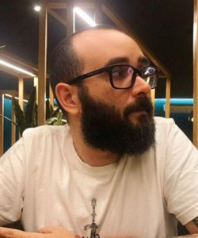

Gustavo Loncarovich Francisco
Gustavo Loncarovich 36 anos formado em engenharia química cursando sistema para internet e pós graduação em data science e analytics, responsável pela elaboração da página exposição.
Rafael William Leme
Rafael William Leme, 31 anos, técnico em logística e estudante de Sistemas para Internet na Fatec São Roque. Atualmente, trabalho como gerente em um restaurante e optei pela área de tecnologia por reconhecer seu potencial para transformar e otimizar processos, tanto no ramo em que atuo, como para abrir caminhos e expandir minha carreira para novas áreas.
Raphael Guilherme Santos
Sou Raphael Guilherme Santos, tenho 30 anos, cursando Sistemas para Internet. Desde cedo, sempre tive muito interesse por tecnologia, o que me motivou a buscar uma formação na área. Escolhi esse curso por unir criatividade e lógica, duas habilidades que valorizo muito, meu objetivo é aprofundar meus conhecimentos em desenvolvimento web, programação e infraestrutura, para futuramente atuar como desenvolvedor. Nesse projeto fiquei responsável em elaborar a página "Concurso Desenhe São Roque"